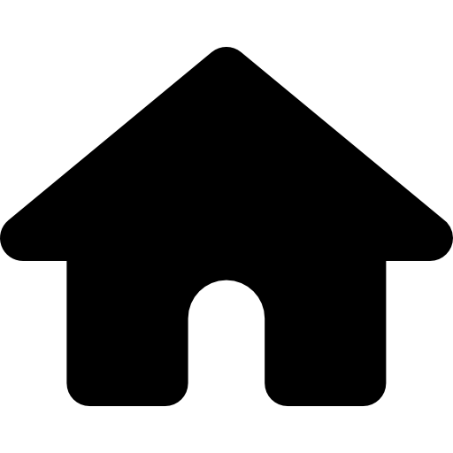

Ilusão de ótica!! O material transparente consegue refletir a luz e/ou deixá-la passar. Você estando em um uma vela), você enxerga só o que está sendo refletido e tem a impressão de que ambas está acessa.